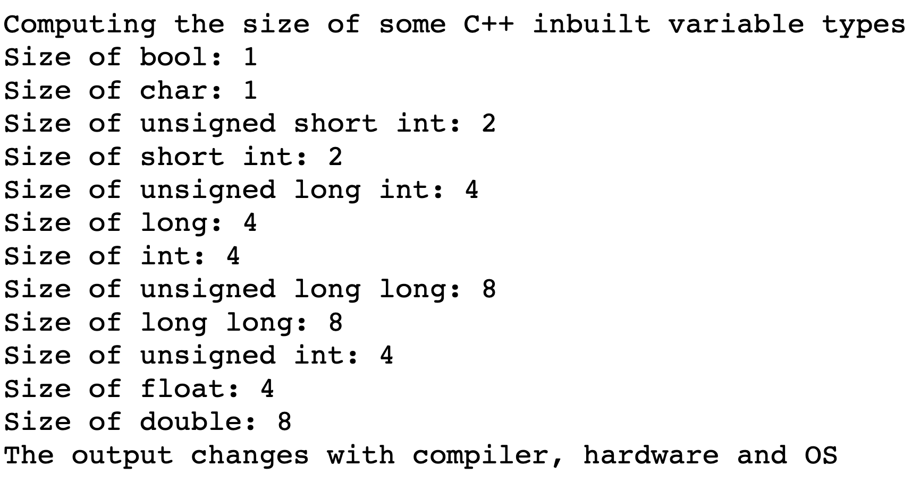

During the summer of my freshman year, I spent quite a lot of time self-studying C++ basic knowledge such as operator overloading, template, file operations. Honestly, it is sufficient for me to pass my courses in later 2 years. However, when I am coding for real industrial project, I realized the knowledge gap. That’s why I make this post to keep track of my further study about C++. In this post, I will go through some deeper concepts in C++ such as compiling, linking, some other keywords, smart pointers, C++ libraries, multi threading, design patters, lambda expressions…
Introduction to C++
- C++ is a cross-platform language that can be used to create high-performance applications.
- Operating System, Game Engines, Browsers…
- C++ was developed as an extension to the C language and C++ supports classes and objects.
- C++ gives programmers a high level of control over system resources and memory.
C++ Variable Size
- On 32-bit machine the size of a pointer is 32 bits (4 bytes), while on 64 bit machine it’s 8 bytes. Regardless of what data type they are pointing to, they have fixed size.
Using Libraries
- Static linking: the library will be put in the executable file at compile time
- Technically faster, since the compiler and linker can perform linking optimization
- Dynamic linking: the library gets linked at run-time
Stack and Heap
- Stack is a typically an area of memory that has predefined size, usually around 2 MB
-
1int value = 999; -
1movl $999, -4(%rbp)
-
- Heap can grow and change as application goes on
-
1int* value = new int(999); // way more complex and expensive operation -
1 2 3 4 5callq __Znwm movq %rax, %rcx movq %rcx, %rax movl $999, (%rcx) ## imm = 0x3E7 movq %rax, -8(%rbp)
-
Constant Keyword
- Constant pointer and pointer constant
1 2 3 4 5 6 7 8 9// Constant Pointer const int* constPtr = new int(99); // *constPtr = 100; // Error: cannot change the content that the pointer is pointing to constPtr = new int(100); // Can change where it points to // Pointer Constant int* const ptrConst = new int(99); // ptrConst = new int(100); // Error: cannot change where it points to *ptrConst = 100; // Can change the content that the pointer is pointing to - Constant method in a class
1 2 3 4 5 6 7 8 9 10 11class Entity { private: int val; mutable int somethingHasToChange; // "mutable" allows us to change the value in a const method public: int getVal() const { // val++; // Error: cannot modify the actual class somethingHasToChange++; return val; } };
Explicit Keyword
-
1 2 3 4 5 6 7 8 9 10 11 12 13 14 15 16 17 18 19 20 21 22 23class Entity { private: string m_Name; int m_Age; public: Entity(const string& name) : m_Name(name), m_Age(-1) {} // "explicit" keyword disables implicit casting // "Entitiy b = 22" is not allowed anymore explicit Entity(int age) : m_Name("unknown"), m_Age(age) {} }; void printEntity(const Entity& entity) {} int main(void) { Entity a = string("Jason"); Entity b = (Entity)22; printEntity(string("Jason")); printEntity(Entity(22)); }
Operator Overloading
-
1 2 3 4 5 6 7 8 9 10 11 12 13 14 15 16 17 18 19 20 21 22 23 24 25struct Vector2 { float x, y; Vector2(float x, float y) : x(x), y(y) {} Vector2 operator+(const Vector2& other) const { return Vector2(x + other.x, y + other.y); } Vector2 operator*(const Vector2& other) const { return Vector2(x * other.x, y * other.y); } bool operator==(const Vector2& other) const { return x == other.x && y == other.y; } bool operator!=(const Vector2& other) const { return !(*this == other); } }; ostream& operator<<(ostream& stream, const Vector2& vec2) { stream << "The data of vec2 is "<< vec2.x << " " << vec2.y << "."; return stream; }
Smart Pointers
- unique pointer (has to be unique)
-
1 2 3 4{ unique_ptr<Entity> entity = make_unique<Entity>(); entity->Print(); }
-
- shared pointer (has reference count)
-
1 2 3 4 5 6 7{ shared_ptr<Entity> e0; { shared_ptr<Entity> sharedEntity = make_shared<Entity>(); e0 = sharedEntity; } } // Entity object gets de-allocated after here
-
- weak pointer (does not increase the reference count)
-
1 2 3 4 5 6 7{ weak_ptr<Entity> e0; { shared_ptr<Entity> sharedEntity = make_shared<Entity>(); e0 = sharedEntity; } // Entity object gets de-allocated after here }
-
Shallow Copy and Deep Copy
- Shallow copy
-
1 2 3 4 5 6 7 8 9 10 11 12 13 14 15 16 17 18 19 20 21 22 23 24 25 26 27 28 29 30 31 32 33 34 35 36 37 38 39 40 41 42class String { private: char* m_Buffer; unsigned int m_Size; public: String(const char* string) { m_Size = strlen(string); m_Buffer = new char[m_Size + 1]; memcpy(m_Buffer, string, m_Size); m_Buffer[m_Size] = '\0'; } ~String() { std::cout << "Attempting to destruct " << (void*)(this->m_Buffer) << std::endl; delete[] m_Buffer; } friend std::ostream& operator<<(std::ostream& stream, const String& stringObject); }; std::ostream& operator<<(std::ostream& stream, const String& stringObject) { stream << stringObject.m_Buffer; return stream; } int main(void) { String stringObject("Jason"); std::cout << stringObject << std::endl; String second = stringObject; std::cout << second << std::endl; /* Jason Jason Attempting to destruct 0x7fc833f05a60 Attempting to destruct 0x7fc833f05a60 demo(64695,0x7ff8547fd4c0) malloc: Double free of object 0x7fc833f05a60 demo(64695,0x7ff8547fd4c0) malloc: *** set a breakpoint in malloc_error_break to debug zsh: abort ./demo */ return 0; } - This issue is caused by both ‘String’ objects having the same ‘char* m_Buffer’ variable and value so that this variable will be freed twice.
-
- Deep copy
-
1 2 3 4String(const String& other) : m_Size(other.m_Size) { m_Buffer = new char[m_Size + 1]; memcpy(m_Buffer, other.m_Buffer, m_Size + 1); }
-
Array
- An array is a collection of elements of the same type placed in contiguous memory locations that can be individually referenced by using an index to a unique identifier.
- Loop through an array
1 2 3 4 5 6 7 8 9 10 11// Using index int myNumbers[5] = {10, 20, 30, 40, 50}; for (int i = 0; i < sizeof(myNumbers) / sizeof(int); i++) { cout << myNumbers[i] << "\n"; } // Enhanced for loop int myNumbers[5] = {10, 20, 30, 40, 50}; for (int i : myNumbers) { cout << i << "\n"; }
STL Array
- Has boundary checking / can return size / stored on the stack
- Loop through an array
1 2 3 4 5 6 7 8 9 10 11 12 13 14template<typename T> void PrintArray(const T& data) { for (int i = 0; i < data.size(); i++) { std::cout << data[i] << std::endl; } } int main(void) { std::array<int, 3> data; data[0] = 0; data[1] = 1; data[2] = 2; PrintArray(data); }
String
- String Concatenation:
- string fullName = firstName + lastName;
- string fullName = firstName.append(lastName);
- String Size:
- int size = txt.size();
C++ Math
- Max: cout « max(5, 10);
- Min: cout « min(5, 10);
C++ Switch Statement
- Example code:
1 2 3 4 5 6 7 8 9 10switch(expression) { case x: // code block break; case y: // code block break; default: // code block }
Structure
-
1 2 3 4struct { // Structure declaration int myNum; // Member (int variable) string myString; // Member (string variable) } myStructure; // Structure variable - Can be used to deal with multiple return values of a function
STL Vector
- Method: vec.size(), vec.empty(), vec.push_back(ele), vec.pop_back(), vec.front(), vec.back()
- Reduce copy times to improve performance
-
1 2 3 4 5 6 7 8 9 10 11 12 13 14 15 16struct Vector2 { float x, y; Vector2(float x, float y) : x(x), y(y) {} Vector2(const Vector2& vec) : x(vec.x), y(vec.y) { std::cout << "Copied!" << std::endl; } }; int main(void) { std::vector<Vector2> vector; vector.reserve(3); vector.emplace_back(1, 2); vector.emplace_back(3, 4); vector.emplace_back(5, 6); }
-
STL Set
- Method: set.insert(ele), s.erase(ele / iterator), s.count(ele), s.find(ele)
STL Map
- Method: map.insert(pair<int,int> (1,10)), map.insert(make_pair(2,200)), map.count(3), map.find(3)
STL Pair
- Initialize
- pair<string,int> p(“Jason”,20);
- pair<string,int> p2 = make_pair(“Larry”,16);
STL List
- Implemented by a doubly linked list
- Insertion and deletion operations are fast
- Access elements is slower that array and takes more space
STL Deque
- Double Ended Queue: Inserting at head is faster than vector
- Provide random access
STL Stack
- Methods: s.push(ele), s.pop(), s.size(), s.empty(), s.top()
STL Queue
- Methods: q.push(ele), q.pop(), q.size(), q.empty(), q.front(), q.back()
Template
- Using template for a function
-
1 2 3 4template<typename T> void Print(T value) { std::cout << "I am going to print: " << value << std::endl; }
-
- Using template for a class
-
1 2 3 4 5 6 7 8 9template<typename T, int N> class Array { private: T m_array[N]; public: int GetSize() const { return N; } };
-
Macro
-
1 2 3 4 5 6 7 8 9 10 11 12 13 14 15 16 17 18 19#if 1 #define DEBUG 1 #if DEBUG == 1 #define LOG(x) std::cout << x << std::endl #else #define LOG(x) #endif #endif #define MAIN int main(void) \ { \ LOG("HELLO"); \ std::cin.get(); \ } MAIN
Function Pointers
-
1 2 3 4 5 6 7 8 9 10 11 12 13 14 15 16 17 18 19void HelloWorld(int a) { std::cout << "Hello World! Value: " << a << std::endl; } int main(void) { // Example 1 auto funPtr1 = HelloWorld; // Example 2 void (*funPtr2)(int a) = HelloWorld; // Example 3 typedef void (*HelloWorldFunction)(int a); HelloWorldFunction funPtr3 = HelloWorld; funPtr1(99); funPtr2(99); funPtr3(99); }
Lambda Expression
- Lambda is a way for us to define anonymous functions or disposable functions
- Reference: https://en.cppreference.com/w/cpp/language/lambda
-
1 2 3 4 5 6 7 8 9 10 11 12 13 14 15 16 17 18#include <functional> void ForEach(const std::vector<int>& values, const std::function<void(int)>& funcPtr) { for (int value : values) funcPtr(value); } int main(void) { std::vector<int> values = {1, 2, 3, 4, 5}; int a = 5; std::function<void(int)> lambda = [=](int value) mutable { std::cout << "Value: " << value << std::endl; std::cout << "a:" << a << std::endl; a = 1; }; ForEach(values, lambda); }
-
Namespace
- The primary purpose of namespace is to avoid naming conflicts.
-
1 2 3 4 5 6 7 8 9 10 11 12 13 14 15 16 17 18 19 20 21namespace apple { void Print(const std::string& text) { std::cout << text << std::endl; } } namespace orange { void Print(const char* text) { std::string temp = text; std::reverse(temp.begin(), temp.end()); std::cout << temp << std::endl; } } int main(void) { using namespace apple; using namespace orange; // If I want to invoke apple::Print() Print("Hello"); // silent runtime error: olleH return 0; }
Threads
-
1 2 3 4 5 6 7 8 9 10 11 12 13 14 15 16 17 18 19 20 21 22 23 24 25 26 27 28 29 30 31 32 33 34 35 36 37 38 39 40 41 42 43#include <iostream> #include <thread> static bool s_Finished = false; void DoWork() { using namespace std::literals::chrono_literals; std::cout << "Started thread id: " << std::this_thread::get_id() << std::endl; while (!s_Finished) { std::cout << "Working..." << std::endl; std::this_thread::sleep_for(1s); } std::cout << "Stop Working..." << std::endl; } int main(void) { std::thread worker(DoWork); std::cin.get(); s_Finished = true; worker.join(); std::cout << "Finished" << std::endl; std::cout << "Started thread id: " << std::this_thread::get_id() << std::endl; std::cin.get(); return 0; } /* Started thread id: 0x70000751b000 Working... Working... Working... Working... Stop Working... Finished Started thread id: 0x7ff8547fd4c0 */
Timing
-
1 2 3 4 5 6 7 8 9 10 11 12 13 14 15 16 17 18 19 20 21 22 23 24 25 26 27 28 29 30 31#include <iostream> #include <chrono> #include <thread> struct Timer { std::chrono::steady_clock::time_point start, end; std::chrono::duration<float> duration; Timer() { start = std::chrono::high_resolution_clock::now(); } ~Timer() { end = std::chrono::high_resolution_clock::now(); duration = end - start; float ms = duration.count() * 1000.0f; std::cout << "Duration: " << ms << "ms" << std::endl; } }; void function() { Timer timer; for (int i = 0; i < 100; i++) { std::cout << "Hello" << std::endl; } } int main(void) { function(); return 0; }
Multi-dimensional Arrays
-
1 2 3 4 5 6 7 8 9 10 11 12 13 14 15 16 17 18 19 20 21 22 23 24 25 26 27 28 29// 2D array int** array2D = new int*[5]; for (int i = 0; i < 5; i++) { array2D[i] = new int[5]; } // Deallocate a 2D array for (int i = 0; i < 5; i++) { delete[] array2D[i]; } delete[] array2D; // An alternative way (less cache miss, better performance) int* array = new int[5 * 5]; for (int i = 0; i < 5; i++) { for (int j = 0; j < 5; j++) { array[5 * i + j] = 2; } } // 3D Array int*** array3D = new int**[50]; for (int i = 0; i < 50; i++) { array3D[i] = new int*[50]; for (int j = 0; j < 50; j++) { int** ptr = array3D[i]; ptr[j] = new int[50]; } }
STL Sorting
-
1 2 3std::vector<int> values = {3, 5, 2, 7, 1}; // Comparison function returns true of a is less than b std::sort(values.begin(), values.end(), [](int a, int b){ return a < b; });
Type Punning
- Type punning is a programming technique that subverts or circumvents the type system of a programming language in order to achieve an effect that would be difficult or impossible to achieve within the bounds of the formal language.
-
1 2 3 4 5 6 7 8 9 10 11 12 13 14 15 16 17struct Entity { int x, y; int* getPositions() { return &x; } }; int main(void) { int a = 50; double& value = *(double*)&a; std::cout << value << std::endl; // -1.94456e-66 Entity e = {5, 8}; int* position = (int*)&e; int y = *(int*)((char*)&e + 4); std::cout << position[0] << ", " << y << std::endl; }
Union
- A union is a user-defined type in which all members share the same memory location.
- Type Punning
-
1 2 3 4 5 6 7 8 9 10struct Union { union { float a; int b; }; }; Union u; u.a = 2.0f; std::cout << u.a << ", " << u.b << std::endl; // Type Punning: 2, 1073741824
-
- Using multiple ways to address the same data
-
1 2 3 4 5 6 7 8 9 10 11 12 13 14 15 16 17 18 19 20 21 22 23 24 25 26 27 28 29 30 31struct Vector2 { float x, y; }; struct Vector4 { union { struct { float x, y, z, w; }; struct { Vector2 a, b; // So we technically can view Vector4 as two Vector2 s // Vector2 a shares the same memory address with float x, and y // Vector2 b shares the same memory address with float z, and w }; }; }; void PrintVector2(const Vector2& vector) { std::cout << vector.x << ", " << vector.y << std::endl; } int main(void) { Vector4 vector = {1.0f, 2.0f, 3.0f, 4.0f}; PrintVector2(vector.a); // 1, 2 vector.z = 500.0f; // 500, 4 PrintVector2(vector.b); }
-
Virtual Destructor
-
1 2 3 4 5 6 7 8 9 10 11 12 13 14 15 16 17 18 19 20 21 22 23 24 25 26 27 28 29 30 31class Base { public: Base() { std::cout << "Base Constructor\n"; } // Must put virtual keyword to safely extent the class virtual ~Base() { std::cout << "Base Destructor\n"; } }; class Derived : public Base { public: Derived() { std::cout << "Derived Constructor\n"; } ~Derived() { std::cout << "Derived Destructor\n"; } }; int main(void) { Base* poly = new Derived(); delete poly; // Needs to call the destructor of the derived class if that is present. /* Base Constructor Derived Constructor Derived Destructor Base Destructor */ }
Casting
-
1 2 3 4 5 6 7 8 9 10 11 12 13 14 15 16 17 18 19 20 21 22 23 24 25 26 27 28 29// ========== static_cast: C++ style double value = 5.25; double s = static_cast<int>(value) + 5.3; // 5 + 5.3 = 10.3 // ========== dynamic_cast: runtime type checking // Instance stores RTTI (runtime type information) Derived* derived = new Derived(); Base* base = derived; // Assume we do not know the type of base AnotherClass* ac = dynamic_cast<AnotherClass*>(base); if (ac) { std::cout << "base is an instance of AnotherClass\n"; } else { std::cout << "base is not an instance of AnotherClass\n"; } // cout: base is not an instance of AnotherClass // ========== reinterpret_cast: type punning double* r = reinterpret_cast<double*>(&base); // ========== const_cast: add or remove const modifier const int num = 50; const int* ptr1 = # std::cout << "Before: *ptr1 is " << *ptr1 << std::endl; // cout: Before: *ptr1 is 50 int* ptr2 = const_cast<int*>(ptr1); *ptr2 = 60; std::cout << "Now: *ptr1 is " << *ptr1 << std::endl; // cout: Now: *ptr1 is 60
Pre-compiled Headers
- You can precompile both C and C++ programs. In C++ programming, it’s common practice to separate class interface information into header files. These header files can later be included in programs that use the class. By precompiling these headers, you can reduce the time a program takes to compile.
-
1time g++ pch.h -std=c++11
Benchmark Test
-
1 2 3 4 5 6 7 8 9 10 11 12 13 14 15 16 17 18 19 20 21 22 23 24 25 26 27 28 29 30 31 32 33 34 35 36 37 38 39 40 41 42 43 44 45 46 47 48 49 50 51 52 53 54 55 56 57 58 59 60 61 62#include <iostream> #include <memory> #include <chrono> #include <array> struct Timer { public: Timer() { startTimePoint = std::chrono::high_resolution_clock::now(); } ~Timer() { Stop(); } void Stop() { auto endTimePoint = std::chrono::high_resolution_clock::now(); auto start = std::chrono::time_point_cast<std::chrono::microseconds>(startTimePoint).time_since_epoch().count(); auto end = std::chrono::time_point_cast<std::chrono::microseconds>(endTimePoint).time_since_epoch().count(); auto duration = end - start; double milliseconds = duration * 0.001; // 1 millisecond = 1000 microseconds std::cout << duration << " us (" << milliseconds << " ms)\n"; } private: std::chrono::time_point<std::chrono::high_resolution_clock> startTimePoint; }; int main(void) { struct Vector2 { float x, y; }; std::cout << "Make shared\n"; { std::array<std::shared_ptr<Vector2>, 1000> sharedPtrs; Timer timer; for (int i = 0; i < sharedPtrs.size(); i++) { sharedPtrs[i] = std::make_shared<Vector2>(); } } std::cout << "New shared\n"; { std::array<std::shared_ptr<Vector2>, 1000> sharedPtrs; Timer timer; for (int i = 0; i < sharedPtrs.size(); i++) { sharedPtrs[i] = std::shared_ptr<Vector2>(new Vector2()); } } std::cout << "Make unique\n"; { std::array<std::unique_ptr<Vector2>, 1000> uniquePtrs; Timer timer; for (int i = 0; i < uniquePtrs.size(); i++) { uniquePtrs[i] = std::unique_ptr<Vector2>(); } } return 0; }